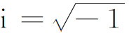

4．非欧几里得几何的先兆
黑尔姆施塔特（Helmstädt）大学数学教授克吕格尔（Georg S．Klügel，1739—1812），他知道萨凯里的书，在他1763年的论文中，提出了引人注意的意见：人们接受欧几里得平行公理的正确性是基于经验。这个意见首次引进的思想是：公理的实质在于符合经验而并非其不证自明。克吕格尔对欧几里得平行公理能够证明表示怀疑。他认识到萨凯里没有得出矛盾，但只是得到似乎异于经验的结果。
克吕格尔的论文给兰伯特提示了平行公理的研究。兰伯特的《平行线论》（Theorie der Parallellinien）一书写于1766年，出版于1786年(6)，他有点儿像萨凯里，考虑一个四边形，它的三个角是直角，并研究第四个角是直角、钝角和锐角的可能性。兰伯特放弃了钝角的假设，因为它导致矛盾。然而，不像萨凯里，兰伯特没有做出锐角假设得到矛盾的结论。
兰伯特从钝角和锐角假设分别推出的结论，即便前者确实导出矛盾，仍是有价值的。他的最显著的结果是在任何一个假设之下，n边形的面积正比于其内角之和与2n－4个直角的差。（萨凯里对三角形已有此结果。）他也注意到钝角假设给出的定理，恰好和球面上图形成立的定理一样。并且他猜想锐角假设得出的定理可以应用于虚半径球面上的图形。这就引导他写成了一篇虚角三角函数的论文(7)，虚角即iA，A是实数且

。这实际上引出了双曲函数（第19章第2节）。以后我们将更加清楚地看到兰伯特的意见意味着什么。兰伯特的几何观点是十分先进的。他认识到任何一组假设如果不导致矛盾的话，一定提供一种可能的几何。这种几何是一种真的逻辑结构，虽然它或许对真实的图形作用很少，后者或可提示一种特别的几何，但不能限制逻辑上可能发展的千差万别的几何。兰伯特还没有达到高斯稍后一些时候引出的更本质的结论。
施魏卡特（Ferdinand Karl Schweikart，1780—1859），一个法学教授，业余研究数学，更迈进了一步。他研究非欧几里得几何，正当高斯努力思考这个课题，但施魏卡特独立得出他的结论。然而他是受萨凯里和兰伯特工作的影响的。1816年他写了一份备忘录，于1818年送交高斯征求意见，其中施魏卡特确实区分了两类几何：欧几里得几何与假设三角形三内角之和不是两直角的几何。这后一种几何他称为星空几何，因为它可能在星空内成立。它的定理都是萨凯里和兰伯特根据锐角假设建立的定理。
陶里努斯（Franz Adolf Taurinus，1794—1874），施魏卡特的外甥，继续其舅父的建议研究星空几何。虽然在他的《伟大而基本的几何》（Geometriae Prima Elementa，1826）一书中证实了一些新结果，特别是一些解析几何方面的结果，但他得出结论说，只有欧几里得几何对物质空间是正确的，而星空几何只是逻辑上相容。陶里努斯也证明了虚半径球面上成立的公式，恰好就是星空几何中所成立的。
兰伯特、施魏卡特与陶里努斯的工作在数学上所得的进展是理应扼要介绍的。此三人及其他如克吕格尔、克斯特纳（Abraham G．Kästner，1719—1800）（格丁根教授），都承认欧几里得平行公理不能证明，亦即和其他公理不相依赖。再者兰伯特、施魏卡特和陶里努斯相信，可能选取与欧几里得平行公理相矛盾的另外公理以建立逻辑上相容的几何。兰伯特未能做出这种几何应用的可能性的论断；陶里努斯认为它不能应用于物质空间；但是施魏卡特相信它可能应用于星际空间。此三人也都注意到实球面上的几何具有以钝角假设为基础的几何性质（若不顾后一几何所导致的矛盾性），而虚半径球面上的几何则具有以锐角假设为基础的几何性质。这样，所有三人都认识到了非欧几里得几何的存在性，但他们都失去一个基本点，即欧几里得几何不是唯一的几何，在经验能够证实的范围内来描述物质空间的性质的。